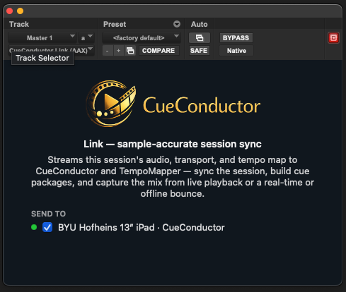

Sync the podium to your DAW¶
The session is the clock; the conductor's iPad follows it. The position tracks the DAW even while stopped, and the pre-roll counts the conductor in through the session's own pre-roll.

What you need¶
- The Link plug-ins installed on the Mac.
- The cue on the conductor's device, with Pro or a cue licensed for external sync.
- The Mac and the device on one network, or a USB cable between them.
The one rule¶
The session's start timecode must equal the cue's start timecode, and the frame rates must match. CueBuilder writes the cue's start timecode from the MIDI file; set the session to the same value. A cue whose session, MIDI and stems all start at 01:00:00:00 at 24 fps locks at bar 1.
Steps¶
- Insert CueConductor Link on the session's main output.
- On the conductor's device open the cue, tap Sync and choose Link to DAW. Under Follow Master, Any Master is fine with one session on the network.
- In the plug-in's SEND TO list, make sure the device is ticked. The dot turns green.
- Press Play in the DAW. The device chases, and from the next locate on it lands exactly.
Leave Auto Latency on. The device measures its own landing error after every chase and folds it in; the manual offsets become fine trim.
Pro Tools on the same Mac¶
CueConductor for Mac reads the plug-in through shared memory, no network at all. Open the cue in the Mac app with Link to DAW chosen and it follows the session on the same machine. iPads on Wi-Fi or USB follow the same session at the same time.
Several devices¶
Every CueConductor in the SEND TO list follows the same session: the conductor, the stands, a counter in the tracking room. Untick a device to leave it out. Each device can still pick its master under Follow Master when more than one session is on the network.
MTC instead¶
For QLab, show-control rigs and DAWs without the plug-in, choose MTC and select the MIDI port the timecode arrives on. Use the IAC Driver for a DAW on the same Mac, or a network MIDI session for another machine. MTC uses the classic sync engine and manual latency only.
If it doesn't work¶
- The cue starts at the wrong bar. The start timecodes differ, or the frame rates do. Fix the session start, or rebuild the cue with the session's start in CueBuilder. Plug-ins before version 9 mis-reported sessions at 29.97 and 23.976; update them from the app.
- The device never turns green. Same network, CueConductor open with the cue loaded and Link to DAW chosen. Corporate Wi-Fi often blocks it; a USB cable always works.
- It follows, but late by a fixed amount. Give Auto Latency a few locates. If it stays, add the frames under Manual Latency: late, increase; early, decrease.